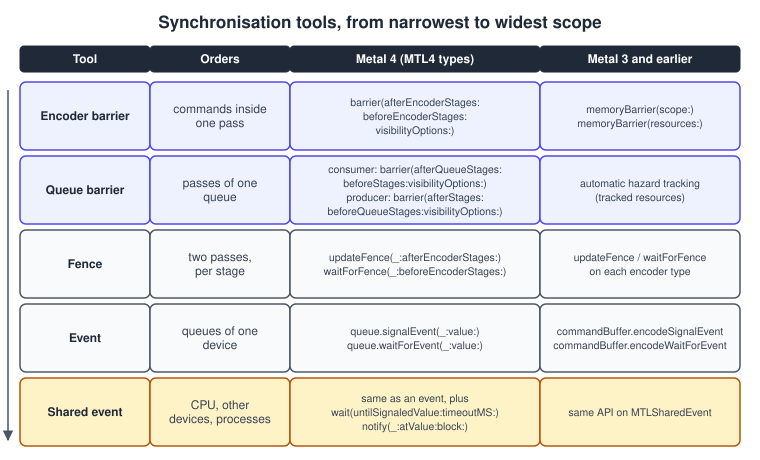
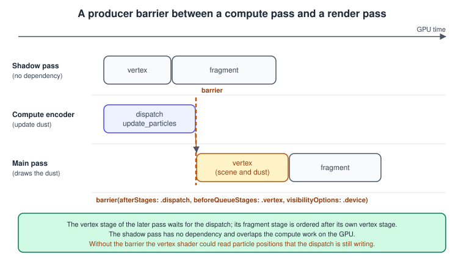

Synchronization and Barriers
|
This content was generated with the assistance of AI and should be verified against the official documentation before being relied on in production. |
The GPU runs many commands at the same time, and it is allowed to start a command before the previous one has finished unless you say otherwise. Most of the time this is what you want, because it keeps the hardware busy; the price is that you must tell Metal when one command needs the results of another. When you forget, nothing crashes: a shadow map is read half written, a particle moves one frame late, a texture sampled by a pass is still being filled, and the picture flickers on some devices and not on others. This page explains the tools Metal provides to order work, how Metal 4 changed them, and how to choose the smallest one that is enough.
The facts were checked in November 2026. The page documents Metal 4 (the MTL4 types, available from the 26 OSes) and the Metal 3 equivalents,
which still work and are used on systems that do not support Metal 4 (A14 and M1 are the minimum for Metal 4). Residency sets need iOS 18, macOS 15 or visionOS 2
and are the only way to make resources resident in Metal 4. The running example is the Metal Bookshelf frame at the point where it has more than one
pass: a shadow pass, the compute pass that moves the dust particles
(Particles), the main pass and the presentation, with frames in flight on the CPU side.
The order in which the GPU actually runs them is what this page controls. The general idea of explicit synchronisation is explained in
Explicit vs Implicit APIs; the OpenGL counterpart (fences, memory barriers and sync objects) is in
Synchronization, Queries and Transform Feedback.
Why synchronisation is needed
Two commands have an access conflict when at least one of them writes memory that the other one reads or writes. Reads of the same memory by several commands are fine. Apple’s resource synchronization article lists the places where conflicts hide:
-
Resource bindings: a buffer or texture bound through an encoder or an argument table that one pass writes and a later pass reads.
-
Argument buffers: resources reached indirectly through a buffer of resource references.
-
Render pass attachments: a pass loads and stores its attachments, so an attachment that a later pass samples must be finished first.
-
Concurrent compute dispatches: a Metal 4 compute encoder runs its commands concurrently, so two dispatches in a row are not ordered unless a barrier says so.
Metal gives some guarantees for free and you do not synchronise them: operations on atomic types are serialised, a render pass’s load and store of each attachment happen in primitive order, a fragment function’s access through a raster order group happens in primitive order, and a tile shader’s accesses follow the order of the tile dispatches within each tile.
Metal 3 tracked, Metal 4 does not
Before Metal 4 the framework did much of this for you. Resources created from a device default to hazardTrackingModeTracked, and Metal inserts the necessary waits
between encoders that use tracked resources through the encoder’s own binding calls. Resources created from an MTLHeap default to untracked. This
convenience costs CPU time on every binding and cannot see resources reached through argument buffers, which is why the manual tools existed anyway.
In Metal 4 every resource is untracked and hazardTrackingMode has no effect on work submitted to an MTL4CommandQueue. You synchronise
explicitly, and in exchange there is no hidden tracking work. The Metal 3 tools still exist (the table in the next section lists both). Because the
two APIs can be adopted one subsystem at a time, an app may run an old MTLCommandQueue next to an MTL4CommandQueue; events synchronise between them.
The tools, from narrow to wide

Apple’s article recommends choosing the mechanism with the smallest scope that resolves the conflict, because a wider scope stops the GPU from doing more unrelated work. In order:
| Tool | Orders | Use when |
|---|---|---|
Encoder barrier |
commands inside one pass |
two dispatches or blits of the same encoder, one reading what the other wrote |
Queue barrier (consumer or producer) |
stages of different passes on one queue |
a compute or blit pass feeds a later pass of any type; the common case |
Fence |
specific stages of two passes, even on different queues |
you want the dependency named explicitly, per stage, between exactly two passes |
Event |
work on different queues of one device |
a Metal 4 queue and an old queue, or two queues, must meet |
Shared event |
the CPU, other devices and other processes |
the CPU must wait for the GPU, or the GPU for another device |
The dependency graph of a Bookshelf frame
Reading the graph tells you which tool each edge needs. The shadow pass and the compute pass do not depend on each other, so the GPU may overlap them. The main pass depends on both but needs different things from each: its fragment shader samples the shadow map (fence, between fragment stages), and its vertex shader reads the particles (barrier, between dispatch and vertex). The CPU is not on the graph at all except at the end of the frame, which is deliberate: the less often the CPU waits for the GPU, the more the two overlap.
Barriers in Metal 4
All barrier methods are on MTL4CommandEncoder, the base protocol of the render, compute and machine-learning encoders. There are three:
| Method | Meaning |
|---|---|
|
Intra-pass barrier. Later commands of this encoder for |
|
Consumer barrier. Later commands of this encoder for |
|
Producer barrier. Work in later encoders for |

You need only one side of a producer and consumer pair for a given dependency. Use the producer form when the producing code knows its consumers (a particle system
that knows its results feed a vertex shader), and the consumer form when the consuming code knows what it needs (a pass that reads whatever came before).
Metal may reorder the exact point at which it applies a barrier, so encode it as close to the consumer as possible. Barriers are for synchronising passes; do not use
them for ordering inside a pass. Inside a render pass use the guarantees listed earlier. The Feature Set Tables add that on Apple GPUs memory barriers
between draws of a render pass cannot name the fragment or tile stages in their after argument.
Stages
MTLStages names the places in the GPU work that a barrier or a fence refers to:
| Stage | Represents |
|---|---|
|
the stages of a render pass |
|
all compute dispatches in a compute pass |
|
copies, fills and mip generation |
|
acceleration structure builds, refits and copies (see Ray Tracing) |
|
machine-learning pass work |
|
sparse and placement sparse resource mapping updates |
|
everything, as a convenience |
The stages of the intra-pass form (afterEncoderStages and beforeEncoderStages) must be stages that the encoder can encode: for an MTL4ComputeCommandEncoder any combination of .dispatch, .blit and
.accelerationStructure. The queue forms accept any stage, even ones unrelated to the current encoder, which is how a compute encoder holds back
a later vertex stage.
Visibility options
The visibilityOptions argument controls which caches are flushed so that the consumer sees the data. .device flushes caches to the GPU’s coherence point:
use it whenever one stage writes memory that another reads. .resourceAlias additionally makes writes visible through aliased virtual addresses, for example when
two resources share heap memory (see Argument Buffers and Bindless Resources for heaps). An empty option set
requests ordering without these cache flushes, which is enough only when no data passes through memory between the two stages.
A complete example
The program below runs a producer dispatch and a consumer dispatch inside one encoder, then a second encoder that reads the result, using an intra-pass
barrier, a producer and consumer barrier, a fence, an event shared with an old-style queue and a shared event on which the CPU waits. Save it as
main.swift in an empty folder and build it with swiftc -O main.swift -o syncdemo on macOS 26 or later with an Apple-silicon Mac. It prints
wrong results: 0.
// SyncDemo.swift: build with swiftc -O SyncDemo.swift -o syncdemo (macOS 26 or later, Apple silicon)
import Metal
let source = """
#include <metal_stdlib>
using namespace metal;
kernel void produce(device float *data [[buffer(0)]], uint i [[thread_position_in_grid]]) {
data[i] = float(i);
}
kernel void consume(device const float *data [[buffer(0)]],
device float *result [[buffer(1)]],
uint i [[thread_position_in_grid]]) {
result[i] = data[i] * 2.0f;
}
"""
guard let device = MTLCreateSystemDefaultDevice(), device.supportsFamily(.metal4) else {
fatalError("A Metal 4 GPU (A14, M1 or later) on a 26 OS is required")
}
let queue = device.makeMTL4CommandQueue()!
let legacyQueue = device.makeCommandQueue()! // an old-style queue, to show events between the two worlds
let compiler = try device.makeCompiler(descriptor: MTL4CompilerDescriptor())
let allocator = device.makeCommandAllocator()!
let commandBuffer = device.makeCommandBuffer()!
let libraryDescriptor = MTL4LibraryDescriptor()
libraryDescriptor.source = source
let library = try compiler.makeLibrary(descriptor: libraryDescriptor)
func pipeline(_ name: String) throws -> any MTLComputePipelineState {
let function = MTL4LibraryFunctionDescriptor()
function.library = library
function.name = name
let descriptor = MTL4ComputePipelineDescriptor()
descriptor.computeFunctionDescriptor = function
return try compiler.makeComputePipelineState(descriptor: descriptor, dynamicLinkingDescriptor: nil,
compilerTaskOptions: nil)
}
let produce = try pipeline("produce"), consume = try pipeline("consume")
// `data` is private: only the GPU touches it. `result` is shared so that the CPU can check it at the end.
let count = 1 << 20
let data = device.makeBuffer(length: count * 4, options: .storageModePrivate)!
let result = device.makeBuffer(length: count * 4, options: .storageModeShared)!
// Metal 4 makes nothing resident for you: both buffers go into a residency set attached to the queue.
let residencySet = try device.makeResidencySet(descriptor: MTLResidencySetDescriptor())
residencySet.addAllocations([data, result])
residencySet.commit()
queue.addResidencySet(residencySet)
let tableDescriptor = MTL4ArgumentTableDescriptor()
tableDescriptor.maxBufferBindCount = 2
let table = try device.makeArgumentTable(descriptor: tableDescriptor)
table.setAddress(data.gpuAddress, index: 0)
table.setAddress(result.gpuAddress, index: 1)
let grid = MTLSize(width: count, height: 1, depth: 1)
let group = MTLSize(width: 256, height: 1, depth: 1)
let fence = device.makeFence()!
let legacyEvent = device.makeEvent()! // a plain MTLEvent: GPU to GPU on one device
let done = device.makeSharedEvent()! // an MTLSharedEvent: the CPU can wait on it
commandBuffer.beginCommandBuffer(allocator: allocator)
// (1) Intra-pass barrier. A Metal 4 compute encoder runs its dispatches concurrently, so the dispatch that
// reads `data` must wait for the dispatch that writes it, inside ONE encoder.
let first = commandBuffer.makeComputeCommandEncoder()!
first.setArgumentTable(table)
first.setComputePipelineState(produce)
first.dispatchThreads(threadsPerGrid: grid, threadsPerThreadgroup: group)
first.barrier(afterEncoderStages: .dispatch, beforeEncoderStages: .dispatch, visibilityOptions: .device)
first.setComputePipelineState(consume)
first.dispatchThreads(threadsPerGrid: grid, threadsPerThreadgroup: group)
// (2a) Producer barrier for later encoders, and a fence that the next encoder waits on.
first.barrier(afterStages: .dispatch, beforeQueueStages: .dispatch, visibilityOptions: .device)
first.updateFence(fence, afterEncoderStages: .dispatch)
first.endEncoding()
// (2b) Consumer barrier and fence wait at the start of the second encoder, which reads what the first one wrote.
let second = commandBuffer.makeComputeCommandEncoder()!
second.barrier(afterQueueStages: .dispatch, beforeStages: .dispatch, visibilityOptions: .device)
second.waitForFence(fence, beforeEncoderStages: .dispatch)
second.setArgumentTable(table)
second.setComputePipelineState(consume)
second.dispatchThreads(threadsPerGrid: grid, threadsPerThreadgroup: group)
second.endEncoding()
commandBuffer.endCommandBuffer()
// (3) Events. An old-style queue signals an MTLEvent; the Metal 4 queue waits for it before running its work.
// Then the Metal 4 queue signals a shared event that the CPU waits on.
let legacy = legacyQueue.makeCommandBuffer()!
legacy.encodeSignalEvent(legacyEvent, value: 1)
legacy.commit()
queue.waitForEvent(legacyEvent, value: 1)
queue.commit([commandBuffer], options: nil)
queue.signalEvent(done, value: 1)
guard done.wait(untilSignaledValue: 1, timeoutMS: 5_000) else { fatalError("GPU timed out") }
// Check: result[i] must be 2 * i.
let values = result.contents().bindMemory(to: Float.self, capacity: count)
var wrong = 0
for i in 0..<count where values[i] != Float(i) * 2 { wrong += 1 }
print("wrong results:", wrong)Source: Resource synchronization
Things to notice:
-
The
produceandconsumedispatches are in oneMTL4ComputeCommandEncoder, which runs them concurrently. Without the intra-pass barrier,consumecould read elements thatproducehas not written yet and the checksum would fail on some runs and pass on others. -
Barriers and the fence repeat the same dependency in three ways on purpose. In your own code pick one per dependency.
-
Barriers are encoded into the command buffer in order, while the event waits are on the queue:
queue.waitForEventis placed in the queue’s timeline before the commit,queue.signalEventafter it. -
The buffer
datais private storage and never touched by the CPU;resultis shared so the program can check it. Both are in a residency set added to the queue. -
The argument table is filled once and bound to both encoders. Binding the same table to several encoders is allowed and cheap.
The same dependency in a render pass
Encode the dust update in a compute encoder, then the main pass, whose vertex stage reads the particles. The consumer form, placed at the start of the render encoder:
import Metal
func encodeMainPass(device: MTLDevice, queue: MTL4CommandQueue, commandBuffer: MTL4CommandBuffer, pass: MTL4RenderPassDescriptor,
pipeline: MTLRenderPipelineState, particles: MTLBuffer, drawTable: MTL4ArgumentTable) {
// Consumer barrier: this render pass waits for earlier dispatches before its vertex stage starts.
let encoder = commandBuffer.makeRenderCommandEncoder(descriptor: pass, options: [])!
encoder.barrier(afterQueueStages: .dispatch, beforeStages: .vertex, visibilityOptions: .device)
encoder.setRenderPipelineState(pipeline)
encoder.setArgumentTable(drawTable, stages: .vertex)
encoder.drawPrimitives(primitiveType: .triangleStrip, vertexStart: 0, vertexCount: 4, instanceCount: 100)
encoder.endEncoding()
}The matching producer form is the last call of the dust update encoder: barrier(afterStages: .dispatch, beforeQueueStages: .vertex, visibilityOptions: .device).
The compute pass overlaps the shadow pass, and only the vertex stage of the main pass waits. A barrier that names .all or the wrong stage either serialises the frame
or does not protect the data: for example .fragment as the consumer stage would leave the vertex shader free to read half-updated positions.
Fences
A fence orders two passes by stage. You encode updateFence(_:afterEncoderStages:) in the producing pass and waitForFence(_:beforeEncoderStages:) in the consuming
pass; the GPU may run other stages of the waiting pass while the fenced stage waits (it can run the vertex stage while the fragment stage waits). Producing passes must be
submitted before consuming passes: encode the producer first when both are in one command buffer, and commit the command buffer that contains the producer first when
they are in different ones. A fence can also order passes on different queues, but Apple recommends an event for that case. An app can have up to 32,768 fences according to the
Feature Set Tables. The shadow edge of the frame graph is a fence: update it after the shadow pass’s fragment stage and wait for it before the main pass’s fragment stage.
In Metal 3 the same calls exist on each encoder type (updateFence(_:) and waitForFence(_:) on a compute encoder; updateFence(_:after:) and waitForFence(_:before:) with
MTLRenderStages on a render encoder).
Events
An MTLEvent holds an unsigned 64-bit counter that starts at 0 and can only increase. A signal sets it to a value; a wait proceeds when the counter is equal to or greater
than the value. Several waiters can be released by one signal. In Metal 4 you add the commands to the queue with queue.signalEvent(_:value:) and queue.waitForEvent(_:value:);
in Metal 3 to a command buffer with encodeSignalEvent(_:value:) and encodeWaitForEvent(_:value:). Any combination of Metal 4 queues and old queues on one device can use the same event,
which is what makes incremental adoption possible: the part of the app that has moved to Metal 4 signals, the part that has not waits.
Rules and pitfalls:
-
A signal value must be greater than the current value; signalling a smaller value is an error.
-
An event cannot count multiple producers like a semaphore. With several producers, use one event per producer or one counter with a protocol such as "value n means n producers finished".
-
A wait that never receives its signal times out. On a Metal 4 queue the timed-out wait releases the queue’s later work; on an old command buffer it ends the command buffer with an error. Keep the time between a wait and the signal that unblocks it short.
Shared events and frames in flight
An MTLSharedEvent is an event the CPU can also signal and wait on, and that can be shared with other devices and other processes (through makeSharedEventHandle() and XPC). It costs more than a plain
event, so use a plain one unless the CPU or another device is involved. Its CPU API: signaledValue, wait(untilSignaledValue:timeoutMS:) and notify(_:atValue:block:) with an MTLSharedEventListener.
Frames in flight need exactly this. Metal 4 gives you a reusable command buffer and command allocators, which hold the memory of the commands you encode. You need one allocator per frame in flight, because the GPU is still reading the commands of frame N while the CPU encodes frame N plus one. A shared event counts finished frames, and the CPU waits for the frame that last used an allocator before resetting it:
import Metal
import MetalKit
/// Frames in flight with Metal 4: N allocators and one shared event that counts finished frames.
final class FrameLoop {
static let framesInFlight = 3
let device: any MTLDevice
let queue: any MTL4CommandQueue
let commandBuffer: any MTL4CommandBuffer
let allocators: [any MTL4CommandAllocator]
let frameEvent: any MTLSharedEvent
private var frame: UInt64 = 0
init(device: any MTLDevice) {
self.device = device
queue = device.makeMTL4CommandQueue()!
commandBuffer = device.makeCommandBuffer()!
allocators = (0..<Self.framesInFlight).map { _ in device.makeCommandAllocator()! }
frameEvent = device.makeSharedEvent()!
}
func draw(in view: MTKView, encode: (any MTL4CommandBuffer, any CAMetalDrawable) -> Void) {
guard let drawable = view.currentDrawable else { return }
frame += 1
// 1. CPU: do not reuse an allocator the GPU may still be reading.
if frame > UInt64(Self.framesInFlight) {
_ = frameEvent.wait(untilSignaledValue: frame - UInt64(Self.framesInFlight), timeoutMS: 1_000)
}
let allocator = allocators[Int(frame) % Self.framesInFlight]
allocator.reset()
// 2. Encode everything for this frame into the one reusable command buffer.
commandBuffer.beginCommandBuffer(allocator: allocator)
encode(commandBuffer, drawable)
commandBuffer.endCommandBuffer()
// 3. GPU timeline: wait for the display, run, tell the display we are done, count the frame.
queue.waitForDrawable(drawable)
queue.commit([commandBuffer], options: nil)
queue.signalDrawable(drawable)
queue.signalEvent(frameEvent, value: frame)
drawable.present()
}
}
/// Optional: ask for timing and errors of one commit.
func commitWithFeedback(queue: any MTL4CommandQueue, commandBuffer: any MTL4CommandBuffer) {
let options = MTL4CommitOptions()
options.addFeedbackHandler { feedback in
if let error = feedback.error { print("GPU error:", error) }
print("GPU time:", feedback.gpuEndTime - feedback.gpuStartTime, "seconds")
}
queue.commit([commandBuffer], options: options)
}Source: Drawing a triangle with Metal 4
The order of the queue calls in step 3 matters. waitForDrawable makes the queue wait until the display has released the drawable. signalDrawable after the commit tells
the display that the GPU work that produces the drawable is complete, and the present() call that follows schedules it. Metal 4 command buffers have no present method.
CAMetalDisplayLink (iOS 17, macOS 14) is the way to time the loop to the display; see
MetalKit, MTKView and SwiftUI.
MTL4CommitOptions can carry feedback handlers; commitWithFeedback at the end of the listing prints the GPU time and any error of a commit. A GPU error such as a page fault from a missing
residency entry is reported there.
To be told when the GPU reaches a value without blocking a thread:
import Metal
func notifyWhenGPUReaches(device: MTLDevice, queue: MTL4CommandQueue) {
let event = device.makeSharedEvent()!
let listener = MTLSharedEventListener(dispatchQueue: DispatchQueue(label: "gpu.events"))
event.notify(listener, atValue: 1) { event, value in print("GPU reached", value) }
queue.signalEvent(event, value: 1)
}Residency sets
Metal 4 does not make resources resident for you. A buffer or texture that a shader reads, directly or through an argument buffer or table, must be in a residency set
that is attached to the command buffer or the queue. Allocation types conform to MTLAllocation: buffers, textures and heaps. Adding any resource that comes from a heap makes the whole heap resident.
import Metal
func manageResidency(device: MTLDevice, queue: MTL4CommandQueue, commandBuffer: MTL4CommandBuffer, buffer: MTLBuffer, texture: MTLTexture) throws {
let descriptor = MTLResidencySetDescriptor()
descriptor.label = "Bookshelf resources"
descriptor.initialCapacity = 64
let set = try device.makeResidencySet(descriptor: descriptor)
set.addAllocation(buffer)
set.addAllocation(texture)
set.commit() // changes take effect on commit
set.requestResidency() // optional hint: start paging in now
queue.addResidencySet(set) // resident for everything the queue runs
commandBuffer.useResidencySet(set) // or only for this command buffer
set.removeAllocation(buffer)
set.commit()
queue.removeResidencySet(set)
set.endResidency()
}What to know:
-
Changes to a set apply on
commit(). Add everything, commit once. Redundant additions are ignored. -
A queue or a command buffer can hold up to 32 residency sets. Attach long-lived resources (meshes, textures, the particle buffer) to the queue, and per-pass resources to the command buffer with
useResidencySet(_:). When you commit a command buffer, Metal attaches the queue’s current sets to it automatically. -
requestResidency()asks Metal to do the CPU work ahead of the first use, at launch or at a level change, instead of when the first command buffer is committed, which would delay the GPU’s start. Metal may postpone some of the work when other apps compete for memory. -
removeAllocation(_:)marks an allocation as a candidate to become non-resident;endResidency()tells Metal that it can reuse the memory of the whole set. Removing a set from the queue does not detach it from command buffers that are already in flight. -
The drawables of an
MTKViewlive in the residency set that MetalKit maintains on the view’sCAMetalLayer(residencySet); add it to the queue once, as the deferred example in Deferred and Tile Shading does. -
Memoryless textures have no memory and need no entry.
-
In Metal 3 residency was implicit for resources bound with encoder calls; resources reached through argument buffers needed
useResource(_:usage:). Residency sets also work with the Metal 3 queue and command buffer types (addResidencySetanduseResidencySet), so an old renderer can adopt them first.
The Metal 3 versions
Everything above has an older form. They work on every system with Metal 3 and also on Metal 4 hardware, where they run on the old queue types:
import Metal
func synchronizeWithMetal3(device: MTLDevice, queue: MTLCommandQueue, pipelineA: MTLComputePipelineState, pipelineB: MTLComputePipelineState,
buffer: MTLBuffer, renderPass: MTLRenderPassDescriptor, renderPipeline: MTLRenderPipelineState) {
let fence = device.makeFence()!
let event = device.makeEvent()!
let commandBuffer = queue.makeCommandBuffer()!
// 1. Inside one compute pass: concurrent dispatches need a memory barrier between dependent ones.
let pass = MTLComputePassDescriptor()
pass.dispatchType = .concurrent
let compute = commandBuffer.makeComputeCommandEncoder(descriptor: pass)!
compute.setComputePipelineState(pipelineA)
compute.setBuffer(buffer, offset: 0, index: 0)
compute.dispatchThreadgroups(MTLSize(width: 64, height: 1, depth: 1), threadsPerThreadgroup: MTLSize(width: 64, height: 1, depth: 1))
compute.memoryBarrier(resources: [buffer])
compute.setComputePipelineState(pipelineB)
compute.dispatchThreadgroups(MTLSize(width: 64, height: 1, depth: 1), threadsPerThreadgroup: MTLSize(width: 64, height: 1, depth: 1))
compute.updateFence(fence)
compute.endEncoding()
// 2. Between passes: a fence.
let render = commandBuffer.makeRenderCommandEncoder(descriptor: renderPass)!
render.waitForFence(fence, before: .vertex)
render.setRenderPipelineState(renderPipeline)
render.setVertexBuffer(buffer, offset: 0, index: 0)
render.drawPrimitives(type: .triangleStrip, vertexStart: 0, vertexCount: 4, instanceCount: 100)
render.endEncoding()
// 3. Between command buffers or queues: an event.
commandBuffer.encodeSignalEvent(event, value: 1)
commandBuffer.commit()
let other = queue.makeCommandBuffer()!
other.encodeWaitForEvent(event, value: 1)
other.commit()
}Source: MTLComputeCommandEncoder
| Need | Metal 3 | Metal 4 |
|---|---|---|
Order dispatches in one compute pass |
|
|
Order compute then render |
automatic for tracked resources, otherwise a fence |
producer or consumer queue barrier |
Fence |
|
the same calls on |
Event |
|
|
Residency |
implicit, plus |
residency sets only |
Common mistakes
-
No barrier between two dependent dispatches in one Metal 4 compute encoder. The result depends on timing and passes in simple tests.
-
The wrong stage. A barrier from
.dispatchto.fragmentdoes not protect a vertex shader that reads the data. Name the stage that reads. -
Too wide a barrier.
.allbefore.allbetween every pass turns the frame into a serial chain. Each unnecessary edge removes overlap. -
A barrier inside a render pass to order two draws. The ordering of draws is already guaranteed per pixel, and on Apple GPUs a memory barrier cannot name the fragment or tile stages in its
afterargument. -
A missing residency entry. A GPU page fault, a wrong picture or a validation error appears only when a resource is evicted or first used. Run with the Metal API validation and shader validation turned on; see Debugging and Profiling.
-
Signalling an event with a smaller value than before, or waiting on a value no one signals.
-
Resetting a command allocator while the GPU still reads it. This is what the shared event wait in the frame loop prevents.
-
Assuming
hazardTrackingModehelps Metal 4 work. It has no effect on anMTL4CommandQueue. -
Waiting for the GPU every frame with
wait(untilSignaledValue:)right after the commit. It removes the overlap that frames in flight exist to provide.
Performance notes
-
Prefer barriers to fences and fences to events: the narrower the scope, the more unrelated work the GPU can overlap.
-
Put the barrier next to the consumer, and name only the stages that depend on each other.
-
Batch residency: a few big sets attached to the queue cost less than many small calls per encoder.
-
Keep three frames in flight for a game loop and fewer when latency matters more than throughput. More frames add latency and memory without raising throughput.
-
One shared event per queue for frame counting is plenty. Do not create an event per pass.
-
Use Metal System Trace to see whether the passes overlap as the dependency graph says they could, and the GPU capture’s dependency viewer to see which edges you created (Debugging and Profiling).
What changed recently
| When | What |
|---|---|
2016 and 2017 (iOS 10, macOS 10.13) |
|
2018 (iOS 12, macOS 10.14) |
|
2022 (Metal 3) |
the same tools; hazard tracking is the default for device-created resources |
2024 (iOS 18, macOS 15, visionOS 2) |
|
2025 (26 OSes, Metal 4) |
|
2026 (27 OSes) |
no change to the synchronisation model; |
Where the books are outdated
Both books predate Metal 4, so they cannot describe its barriers, allocators or residency sets.
| Topic | Books | Current practice |
|---|---|---|
Command buffers |
MBT ch. 1 to 3 onward create a new |
|
Resource hazards |
written for Metal 2 and Metal 3, where tracked resources are synchronised automatically |
Metal 4 resources are untracked: add barriers, fences or events |
Residency |
not covered |
residency sets are required in Metal 4 and recommended in Metal 3 |
Presenting |
the Metal 2 and Metal 3 style |
|
See also
-
Compute Kernels: the dispatches that most barriers separate.
-
Particles: the dust update and draw that use the producer barrier.
-
Render Passes and Load/Store Actions: which passes exist and what they load and store.
-
GPU-Driven Rendering and Indirect Command Buffers: barriers for GPU-written command buffers.
-
Hello Triangle with Metal 4: the first frame loop.
-
Game Loop and Frame Timing: why frames in flight exist.